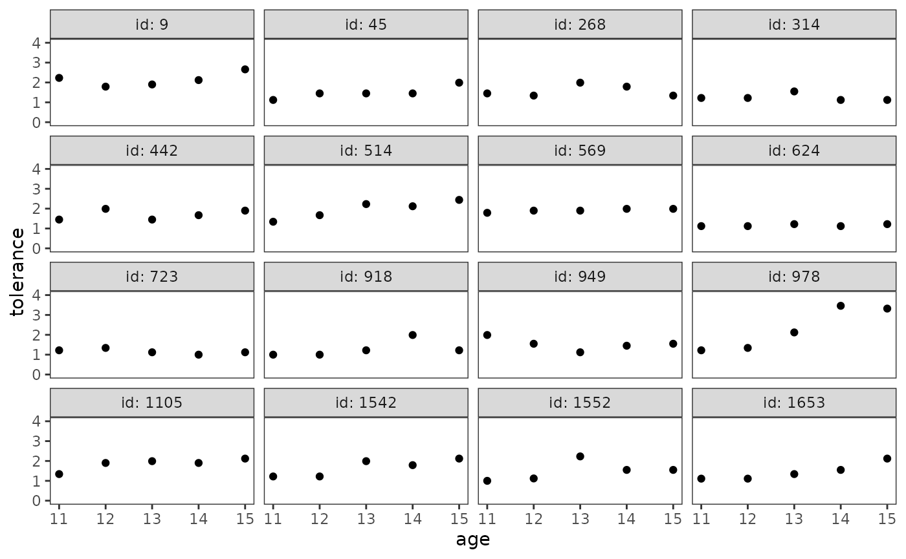
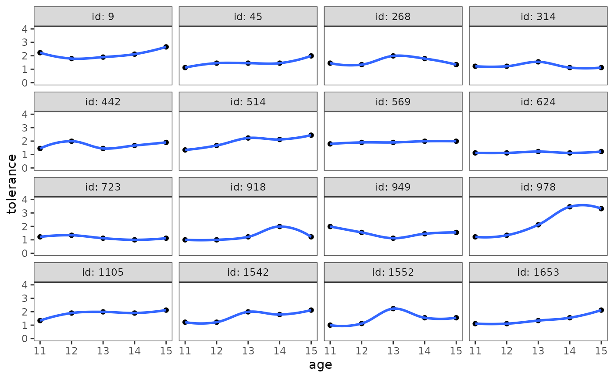
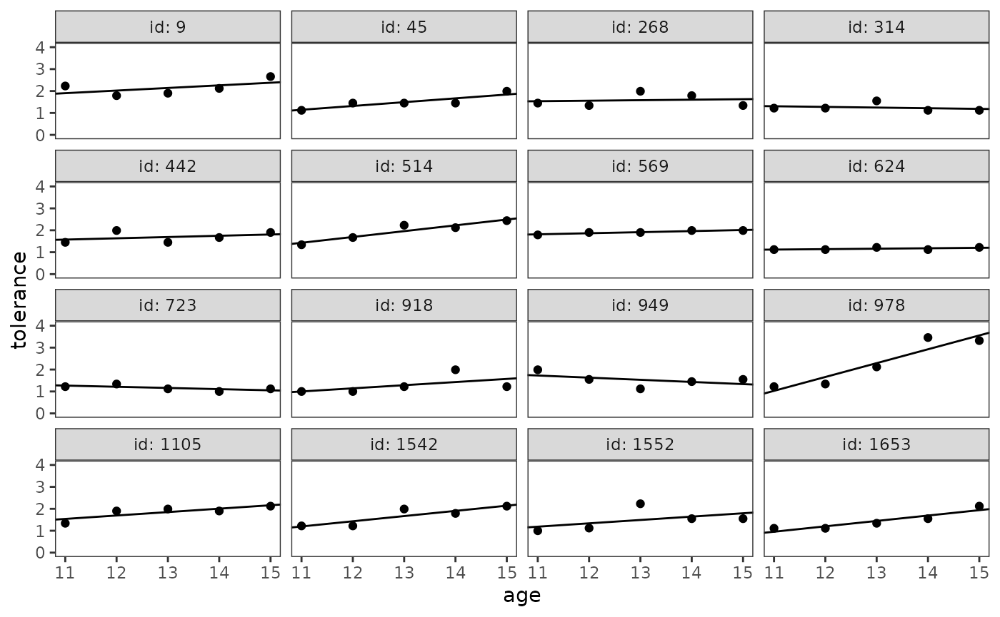
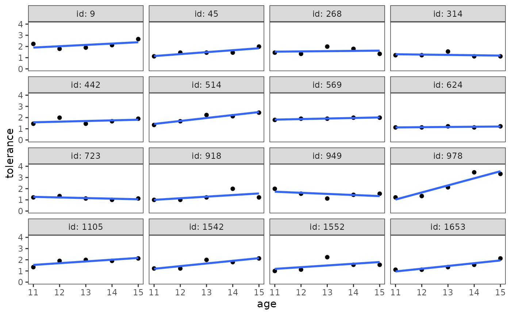
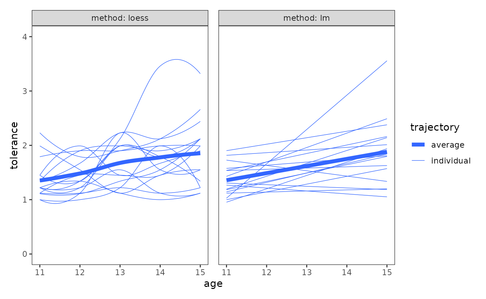
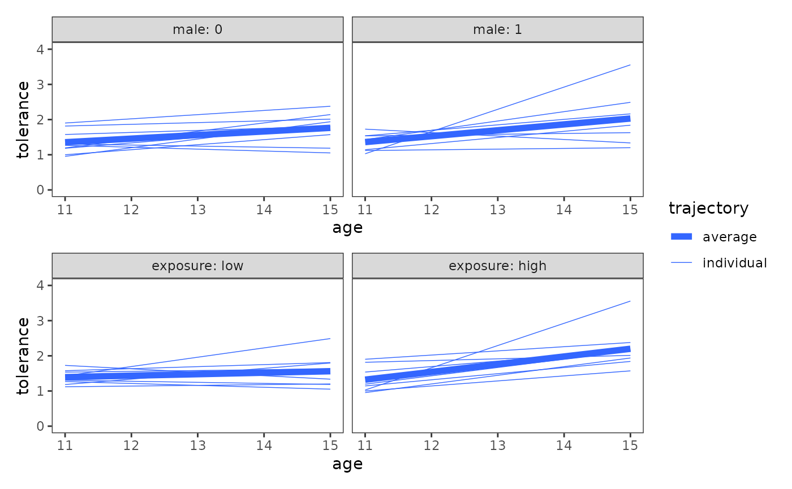
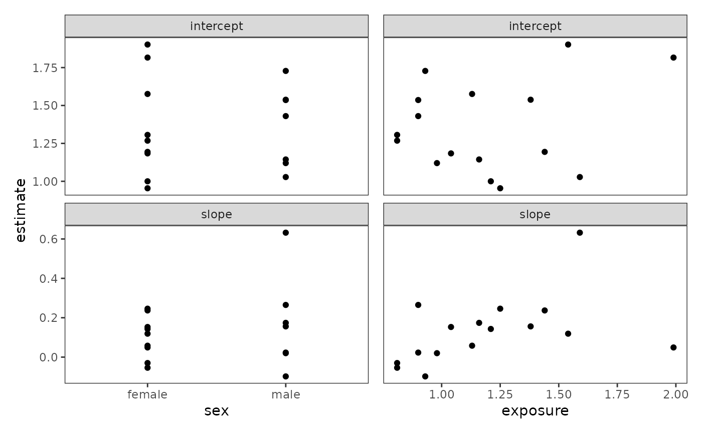

Chapter 2: Exploring longitudinal data on change
Source:vignettes/articles/chapter-2.Rmd
chapter-2.Rmd
library(alda)
library(dplyr)
library(tidyr)
library(purrr)
library(ggplot2)
library(scales)
library(patchwork)
library(lme4)
library(corrr)
library(broom)2.1 Creating a longitudinal data set
In Section 2.1 Singer and Willet (2003) introduce two distinct formats of data organization for longitudinal data—the person-level format and the person-period format—using a subset of data from the National Youth Survey (NYS) measuring the development of tolerance towards deviant behaviour in adolescents over time in relation to self-reported sex and exposure to deviant peers (Raudenbush & Chan, 1992). Adolescents’ tolerance towards deviant behaviour was based on a 9-item scale measuring attitudes tolerant of deviant behaviour. The scale was administered each year from age 11 to 15 and so is a time-varying variable. However, adolescents’ self-reported sex and exposure to deviant peers were only recorded at the beginning of the study period and so are time-invariant variables.
For this example we illustrate the difference between the two formats
using the deviant_tolerance_pl and
deviant_tolerance_pp data sets, which correspond to the
adolescent tolerance of deviant behaviour data organized in the
person-level and person-period formats, respectively.
The Person-Level Data Set
In the person-level format (also known as wide or
multivariate format), each person has only one row of
data and multiple columns containing data from each measurement occasion
for any time-varying variables. This is demonstrated in the
deviant_tolerance_pl data set, a person-level data frame
with 16 rows and 8 columns:
-
id: Participant ID. -
tolerance_11,tolerance_12,tolerance_13,tolerance_14,tolerance_15: Average score across a 9-item scale assessing attitudes favourable to deviant behaviour at ages 11, 12, 13, 14, and 15. Each item used a four point scale (1 = very wrong, 2 = wrong, 3 = a little bit wrong, 4 = not wrong at all). -
male: Binary indicator for whether the adolescent is a male. -
exposure: Average score across a 9-item scale assessing level of exposure to deviant peers. Each item used a five point Likert score (ranging from 0 = none, to 4 = all).
deviant_tolerance_pl
#> # A tibble: 16 × 8
#> id tolerance_11 tolerance_12 tolerance_13 tolerance_14 tolerance_15 male
#> <fct> <dbl> <dbl> <dbl> <dbl> <dbl> <dbl>
#> 1 9 2.23 1.79 1.9 2.12 2.66 0
#> 2 45 1.12 1.45 1.45 1.45 1.99 1
#> 3 268 1.45 1.34 1.99 1.79 1.34 1
#> 4 314 1.22 1.22 1.55 1.12 1.12 0
#> 5 442 1.45 1.99 1.45 1.67 1.9 0
#> 6 514 1.34 1.67 2.23 2.12 2.44 1
#> 7 569 1.79 1.9 1.9 1.99 1.99 0
#> 8 624 1.12 1.12 1.22 1.12 1.22 1
#> 9 723 1.22 1.34 1.12 1 1.12 0
#> 10 918 1 1 1.22 1.99 1.22 0
#> 11 949 1.99 1.55 1.12 1.45 1.55 1
#> 12 978 1.22 1.34 2.12 3.46 3.32 1
#> 13 1105 1.34 1.9 1.99 1.9 2.12 1
#> 14 1542 1.22 1.22 1.99 1.79 2.12 0
#> 15 1552 1 1.12 2.23 1.55 1.55 0
#> 16 1653 1.11 1.11 1.34 1.55 2.12 0
#> # ℹ 1 more variable: exposure <dbl>Although the person-level format is common in cross-sectional research, it has four disadvantages that make it ill-suited for longitudinal data analysis:
- It restricts data analysis to examining rank order wave-to-wave relationships, leading to non-informative summaries that do not tell us how each person changes over time, nor even the direction of change.
- It omits an explicit time-indicator variable, rendering time unavailable for data analysis.
- It requires adding an additional variable to the data set for each unique measurement occasion, making it inefficient or useless when the number or spacing of measurement occasions varies across individuals.
- It requires adding an additional set of columns for each time-varying predictor (one column per measurement occasion), rendering it unable to easily handle the presence of time-varying predictors.
Singer and Willet (2003) exemplify the first of these disadvantages
by postulating how one might analyze the person-level tolerance towards
deviant behaviour data set. A natural approach would be to summarize the
wave-to-wave relationships among tolerance_11 through
tolerance_15 using bivariate correlations and bivariate
plots; however, doing so does not tell us anything about how adolescent
tolerance towards deviant behaviour changed over time for either
individuals or groups. Rather, the weak positive correlation between
measurement occasions merely tells us that the rank order of tolerance
towards deviant behaviour remained relatively stable across
occasions—that is, adolescents who were more tolerant towards deviant
behaviour at one measurement occasion tended to be more tolerant at the
next.
# Table 2.1, page 20:
deviant_tolerance_pl |>
select(starts_with("tolerance")) |>
correlate(diagonal = 1) |>
shave() |>
fashion()
#> term tolerance_11 tolerance_12 tolerance_13 tolerance_14 tolerance_15
#> 1 tolerance_11 1.00
#> 2 tolerance_12 .66 1.00
#> 3 tolerance_13 .06 .25 1.00
#> 4 tolerance_14 .14 .21 .59 1.00
#> 5 tolerance_15 .26 .39 .57 .83 1.00The first disadvantage is also apparent when examining bivariate
plots between measurement occasions: There is again no way to tell how
adolescent tolerance towards deviant behaviour changed over time for
either individuals or groups. Moreover, because we lack an explicit
time-indicator variable, it isn’t possible to plot the person-level data
set in a more meaningful way, such as a time series plot organized by
id.
deviant_tolerance_pl |>
select(starts_with("tolerance")) |>
pairs()Considered together, these disadvantages make the person-level format ill-suited for most longitudinal data analyses. Fortunately, each of the disadvantages of the person-level format can be addressed by a simple conversion to the person-period format.
The Person-Period Data Set
In the person-period format (also known as long or
univariate format), each person has one row of data for
each measurement occasion, with a participant identifier
variable for each person, and a time-indicator
variable for each measurement occasion. In this format,
time-invariant variables have identical values across each measurement
occasion; whereas time-varying variables have potentially differing
values. This is demonstrated in the deviant_tolerance_pp
data set, a person-period data frame with 80 rows and 5 columns:
-
id: Participant ID. -
age: Adolescent age in years. -
tolerance: Average score across a 9-item scale assessing attitudes favourable to deviant behaviour. Each item used a four point scale (1 = very wrong, 2 = wrong, 3 = a little bit wrong, 4 = not wrong at all). -
male: Binary indicator for whether the adolescent is a male. -
exposure: Average score across a 9-item scale assessing level of exposure to deviant peers. Each item used a five point Likert score (ranging from 0 = none, to 4 = all).
deviant_tolerance_pp
#> # A tibble: 80 × 5
#> id age tolerance male exposure
#> <fct> <dbl> <dbl> <dbl> <dbl>
#> 1 9 11 2.23 0 1.54
#> 2 9 12 1.79 0 1.54
#> 3 9 13 1.9 0 1.54
#> 4 9 14 2.12 0 1.54
#> 5 9 15 2.66 0 1.54
#> 6 45 11 1.12 1 1.16
#> 7 45 12 1.45 1 1.16
#> 8 45 13 1.45 1 1.16
#> 9 45 14 1.45 1 1.16
#> 10 45 15 1.99 1 1.16
#> # ℹ 70 more rowsAlthough the person-period data set contains the same information as the person-level data set, its format for data organization makes it more amenable to longitudinal data analysis, specifically:
- It includes an explicit participant identifier variable, enabling the data to be sorted into person-specific subsets.
- It includes an explicit time-indicator variable, rendering time available for data analysis, and accommodating research designs in which the number or spacing of measurement occasions varies across individuals.
- It needs only a single column for each variable in the data set—whether time-varying or time-invariant, outcome or predictor—making it trivial to handle any number of variables.
Indeed, most R functions are designed to work with data in the person-period format—which falls under the larger umbrella of the tidy data format—due to R’s vectorized nature. As Wickham, Çetinkaya-Rundel, and Grolemund (2023) explain, there are three interrelated rules that make a data set tidy:
- Each variable must have its own column.
- Each observation must have its own row.
- Each value must have its own cell.
Thus, the person-period format is simply a special case of the tidy data format, which distinguishes itself through its longitudinal nature and requirements for explicit participant identifier and time-indicator variables.
Converting Between Person-Level and Person-Period Data Sets
Unfortunately, longitudinal data is often initially stored as a person-level data set, meaning that most real analyses will require at least a little tidying to get your data into a person-period format. There are a few reasons for this:
- Many people aren’t familiar with the principles of tidy data—nor its special cases like the person person-period format—and it’s hard to derive them yourself without spending a lot of time working with longitudinal data.
- The person-level format closely resembles the familiar cross-sectional data-set format, making it a seemingly sensible default for inexperienced analysts.
- Data is often organized to facilitate non-analytical goals, such as data entry, rather than data analysis.
Thus, an essential skill for the aspiring longitudinal data analyst
is to be able to convert a person-level data set into a person-period
data set. The tidyr package provides two functions that
can easily convert a longitudinal data set from one format to the other:
pivot_longer() and pivot_wider().
To convert a person-level data set into a person-period data set use
pivot_longer():
# Figure 2.1, page 18:
pivot_longer(
deviant_tolerance_pl,
cols = starts_with("tolerance_"),
names_to = "age",
names_prefix = "tolerance_",
names_transform = as.integer,
values_to = "tolerance"
)
#> # A tibble: 80 × 5
#> id male exposure age tolerance
#> <fct> <dbl> <dbl> <int> <dbl>
#> 1 9 0 1.54 11 2.23
#> 2 9 0 1.54 12 1.79
#> 3 9 0 1.54 13 1.9
#> 4 9 0 1.54 14 2.12
#> 5 9 0 1.54 15 2.66
#> 6 45 1 1.16 11 1.12
#> 7 45 1 1.16 12 1.45
#> 8 45 1 1.16 13 1.45
#> 9 45 1 1.16 14 1.45
#> 10 45 1 1.16 15 1.99
#> # ℹ 70 more rowsAfter the person-level data, there are five key arguments:
-
colsspecifies which columns need to be pivoted into longer format—for longitudinal data, this will always be the columns corresponding to any time-varying variables. This argument uses tidy selection, a small data science language for selecting columns in a data frame (?tidyr_tidy_select), making it simple to select each column of a time-varying variable based on its naming pattern. -
names_tonames the new column (or columns) to create from the information stored in the column names specified bycols. We named the new columnage. -
names_prefixremoves the matching text from the start of each column name—for longitudinal data, this will always be the prefix for any time-varying variables separating the variable name from the measurement occasion. This argument uses a regular expression to select the matching text. -
names_transformapplies a function to the new column (or columns). We converted the new columnagefrom type character to type integer. -
values_tonames the new column (or columns) to create from the data stored in cell values. We named the new columntolerance.
Note that "age" and "tolerance" are quoted
in the call to pivot_longer() because they represent the
column names of the new variables we’re creating, rather than
already-existing variables in the data.
Although most longitudinal data analyses will begin by getting your data into a person-period format, it can occasionally be useful to go in the opposite direction. Some computations can be made easier using a person-period data set, and certain functions and analyses expect a person-period data set; therefore, it’s helpful to know how to untidy, transform, and re-tidy your data as needed.
To convert a person-period data set to person-level data set use
dplyr::pivot_wider():
pivot_wider(
deviant_tolerance_pp,
names_from = age,
names_prefix = "tolerance_",
values_from = tolerance
)
#> # A tibble: 16 × 8
#> id male exposure tolerance_11 tolerance_12 tolerance_13 tolerance_14
#> <fct> <dbl> <dbl> <dbl> <dbl> <dbl> <dbl>
#> 1 9 0 1.54 2.23 1.79 1.9 2.12
#> 2 45 1 1.16 1.12 1.45 1.45 1.45
#> 3 268 1 0.9 1.45 1.34 1.99 1.79
#> 4 314 0 0.81 1.22 1.22 1.55 1.12
#> 5 442 0 1.13 1.45 1.99 1.45 1.67
#> 6 514 1 0.9 1.34 1.67 2.23 2.12
#> 7 569 0 1.99 1.79 1.9 1.9 1.99
#> 8 624 1 0.98 1.12 1.12 1.22 1.12
#> 9 723 0 0.81 1.22 1.34 1.12 1
#> 10 918 0 1.21 1 1 1.22 1.99
#> 11 949 1 0.93 1.99 1.55 1.12 1.45
#> 12 978 1 1.59 1.22 1.34 2.12 3.46
#> 13 1105 1 1.38 1.34 1.9 1.99 1.9
#> 14 1542 0 1.44 1.22 1.22 1.99 1.79
#> 15 1552 0 1.04 1 1.12 2.23 1.55
#> 16 1653 0 1.25 1.11 1.11 1.34 1.55
#> # ℹ 1 more variable: tolerance_15 <dbl>After the person-period data, there are three key arguments:
-
names_fromspecifies which column (or columns) to get the name of the output columns from—for longitudinal data, this will always be the columns corresponding to any time-indicator variables. -
names_prefixadds the specified string to the start of each output column name—for longitudinal data, this will always be the prefix for any time-varying variables separating the variable name from the measurement occasion. -
values_fromspecifies which column (or columns) to get the cell values from—for longitudinal data, this will always be the columns corresponding to any time-varying variables.
To learn more about the principles of tidy data and how pivoting works, see the Data Tidying chapter of R for Data Science.
2.2 Descriptive analysis of individual change over time
In Section 2.2 Singer and Willet (2003) use the
deviant_tolerance_pp data set to demonstrate how the
person-period format facilitates exploratory analyses that describe how
individuals in the data set change over time, revealing the nature and
idiosyncrasies of each person’s temporal pattern of change.
Empirical Growth Plots
Empirical growth plots show, for each individual, the sequence of change in a time-varying variable. Here change can be evaluated in either absolute terms against the scale of the variable of interest, or in relative terms in comparison to other sample members. Singer and Willet (2003) identify several questions that are helpful to answer when examining empirical growth plots:
- Who is increasing?
- Who is decreasing?
- Who is increasing the most? The least?
- Who is decreasing the most? The least?
- Does anyone increase and then decrease?
- Does anyone decrease and then increase?
To construct an empirical growth plot with the ggplot2 package, put your time-indicator on the x-axis, your time-varying variable on the y-axis, and facet each individual into a separate panel.
# Figure 2.2, page 25:
deviant_tolerance_empgrowth <- deviant_tolerance_pp |>
ggplot(aes(x = age, y = tolerance)) +
geom_point() +
coord_cartesian(ylim = c(0, 4)) +
facet_wrap(vars(id), labeller = label_both)
deviant_tolerance_empgrowth
If your data set is large, Singer and Willet (2003) suggest constructing empirical growth plots for a randomly selected a subsample of individuals—perhaps stratified into groups defined by the values of important predictors—rather than using the entire sample.
This task can be be easily accomplished using filter()
function from the dplyr package prior to plotting. For
example, here we sample four random adolescents. Note the use of the
set.seed() function prior to sampling, which sets the state
of R’s random number generator: we do this so that the results of the
random sample are reproducible.
set.seed(345)
deviant_tolerance_pp |>
filter(id %in% sample(unique(id), size = 4))
#> # A tibble: 20 × 5
#> id age tolerance male exposure
#> <fct> <dbl> <dbl> <dbl> <dbl>
#> 1 268 11 1.45 1 0.9
#> 2 268 12 1.34 1 0.9
#> 3 268 13 1.99 1 0.9
#> 4 268 14 1.79 1 0.9
#> 5 268 15 1.34 1 0.9
#> 6 442 11 1.45 0 1.13
#> 7 442 12 1.99 0 1.13
#> 8 442 13 1.45 0 1.13
#> 9 442 14 1.67 0 1.13
#> 10 442 15 1.9 0 1.13
#> 11 569 11 1.79 0 1.99
#> 12 569 12 1.9 0 1.99
#> 13 569 13 1.9 0 1.99
#> 14 569 14 1.99 0 1.99
#> 15 569 15 1.99 0 1.99
#> 16 1105 11 1.34 1 1.38
#> 17 1105 12 1.9 1 1.38
#> 18 1105 13 1.99 1 1.38
#> 19 1105 14 1.9 1 1.38
#> 20 1105 15 2.12 1 1.38This approach can also be extended to randomly select a subsample of
individuals within different strata by combining the
group_split() function from the dplyr package to split the
data into a list of different groups, and the map()
function from the purrr package to apply the
filter() call from the previous example to each group. For
example, here we sample two random adolescent males and two random
adolescent females, then combine the filtered data frames in the list
back together using the list_rbind() function from the
purrr package.
set.seed(123)
deviant_tolerance_pp |>
group_split(male) |>
map(\(.group) filter(.group, id %in% sample(unique(id), size = 2))) |>
list_rbind()
#> # A tibble: 20 × 5
#> id age tolerance male exposure
#> <fct> <dbl> <dbl> <dbl> <dbl>
#> 1 442 11 1.45 0 1.13
#> 2 442 12 1.99 0 1.13
#> 3 442 13 1.45 0 1.13
#> 4 442 14 1.67 0 1.13
#> 5 442 15 1.9 0 1.13
#> 6 918 11 1 0 1.21
#> 7 918 12 1 0 1.21
#> 8 918 13 1.22 0 1.21
#> 9 918 14 1.99 0 1.21
#> 10 918 15 1.22 0 1.21
#> 11 268 11 1.45 1 0.9
#> 12 268 12 1.34 1 0.9
#> 13 268 13 1.99 1 0.9
#> 14 268 14 1.79 1 0.9
#> 15 268 15 1.34 1 0.9
#> 16 514 11 1.34 1 0.9
#> 17 514 12 1.67 1 0.9
#> 18 514 13 2.23 1 0.9
#> 19 514 14 2.12 1 0.9
#> 20 514 15 2.44 1 0.9Using a Trajectory to Summarize Each Person’s Empirical Growth Record
Each person’s empirical growth record can be summarized by applying two standardized approaches:
- The nonparametric approach uses nonparametric smooths to summarize each person’s pattern of change over time graphically without imposing a specific functional form. The primary advantage of the nonparametric approach is that it requires no assumptions.
- The parametric approach uses separate parametric models fit to each person’s data to summarize their pattern of change over time. Each model uses a common functional form for the trajectories (e.g., a straight line, a quadratic curve, etc.). The primary advantage of the parametric approach is that it provides numeric summaries of the trajectories that can be used for further exploration.
Singer and Willett (2003) recommend using both approaches—beginning with the nonparametric approach—as examining the smoothed trajectories will help you select a common functional form for the trajectories in the parametric approach.
The Nonparametric Approach
The stat_smooth() function can be used to add a
nonparametric smooth layer to the empirical growth record plot. The
choice of a particular smoothing algorithm is primarily a matter of
convenience, so we’ll use the default loess smoother. The
span argument controls the amount of smoothing for the
default loess smoother—with smaller numbers producing wigglier lines and
larger numbers producing smoother lines; here choose a value that
creates a similar smooth to the textbook figure.
# Figure 2.3, page 27:
deviant_tolerance_empgrowth +
stat_smooth(method = "loess", se = FALSE, span = .9)
Singer and Willet (2003) recommend focusing on the elevation, shape, and tilt of the smoothed trajectories by answering questions like:
- Do the scores hover at the low, medium, or high end of the scale?
- Does everyone change over time or do some people remain the same?
- Do the trajectories have an inflection point or plateau?
- Is the rate of change steep or shallow?
- What is the overall functional form of the trajectory at the group-level? Is it linear or curvilinear? smooth or step-like?
Answering the last question is particularly important, as it will help you select a common functional form for the trajectories in the parametric approach.
The Parametric Approach
For the parametric approach, Singer and Willet (2003) suggest using the following three-step process:
- Estimate a within-person linear model for each person in the data set.
- Collect summary statistics from each within-person linear model into a single data set.
- Add each person’s fitted trajectory to the empirical growth record plot.
To begin, we’ll use the lmList() function from the
lme4 package to fit a common linear model for each
adolescent in the data set. The model formula for the
lmList() function takes the form
response ~ terms | group. Here we select a straight line as
the common functional form for the trajectories, with age centred at age
11.
deviant_tolerance_fit <- lmList(
tolerance ~ I(age - 11) | id,
pool = FALSE,
data = deviant_tolerance_pp
)
# Table 2.2, page 30:
summary(deviant_tolerance_fit)
#> Call:
#> Model: tolerance ~ I(age - 11) | NULL
#> Data: deviant_tolerance_pp
#>
#> Coefficients:
#> (Intercept)
#> Estimate Std. Error t value Pr(>|t|)
#> 9 1.902 0.25194841 7.549165 4.819462e-03
#> 45 1.144 0.13335666 8.578499 3.329579e-03
#> 268 1.536 0.26038049 5.899059 9.725771e-03
#> 314 1.306 0.15265648 8.555156 3.356044e-03
#> 442 1.576 0.20786534 7.581832 4.759898e-03
#> 514 1.430 0.13794927 10.366130 1.915399e-03
#> 569 1.816 0.02572936 70.580844 6.267530e-06
#> 624 1.120 0.04000000 28.000000 1.000014e-04
#> 723 1.268 0.08442748 15.018806 6.407318e-04
#> 918 1.000 0.30444376 3.284679 4.626268e-02
#> 949 1.728 0.24118043 7.164760 5.600382e-03
#> 978 1.028 0.31995000 3.213002 4.884420e-02
#> 1105 1.538 0.15115555 10.174949 2.022903e-03
#> 1542 1.194 0.18032748 6.621287 7.015905e-03
#> 1552 1.184 0.37355321 3.169562 5.049772e-02
#> 1653 0.954 0.13925516 6.850734 6.366647e-03
#> I(age - 11)
#> Estimate Std. Error t value Pr(>|t|)
#> 9 0.119 0.10285751 1.1569404 0.33105320
#> 45 0.174 0.05444263 3.1960249 0.04948216
#> 268 0.023 0.10629989 0.2163690 0.84257784
#> 314 -0.030 0.06232175 -0.4813729 0.66318168
#> 442 0.058 0.08486067 0.6834733 0.54336337
#> 514 0.265 0.05631755 4.7054602 0.01816360
#> 569 0.049 0.01050397 4.6649040 0.01859462
#> 624 0.020 0.01632993 1.2247449 0.30806801
#> 723 -0.054 0.03446738 -1.5666989 0.21516994
#> 918 0.143 0.12428864 1.1505476 0.33330784
#> 949 -0.098 0.09846150 -0.9953129 0.39294486
#> 978 0.632 0.13061904 4.8384983 0.01683776
#> 1105 0.156 0.06170899 2.5279945 0.08557441
#> 1542 0.237 0.07361839 3.2193045 0.04861002
#> 1552 0.153 0.15250246 1.0032625 0.38965538
#> 1653 0.246 0.05685068 4.3271249 0.02275586Next we’ll collect summary statistics from each within-person linear
model into a single data set using the tidy() function from
the broom package. However, because
lmList() returns a list of models, we need to apply the
tidy() call to each model prior to collecting the summary
statistics into a single data set. Ironically, we also need to tidy the
result of tidy() to prepare the data for plotting.
deviant_tolerance_tidy <- deviant_tolerance_fit |>
map(tidy) |>
list_rbind(names_to = "id") |>
mutate(
id = as.factor(id),
term = case_when(
term == "(Intercept)" ~ "intercept",
term == "I(age - 11)" ~ "slope"
)
)
deviant_tolerance_abline <- deviant_tolerance_tidy |>
select(id:estimate) |>
pivot_wider(names_from = term, values_from = estimate)
deviant_tolerance_abline
#> # A tibble: 16 × 3
#> id intercept slope
#> <fct> <dbl> <dbl>
#> 1 9 1.90 0.119
#> 2 45 1.14 0.174
#> 3 268 1.54 0.0230
#> 4 314 1.31 -0.0300
#> 5 442 1.58 0.0580
#> 6 514 1.43 0.265
#> 7 569 1.82 0.0490
#> 8 624 1.12 0.0200
#> 9 723 1.27 -0.0540
#> 10 918 1 0.143
#> 11 949 1.73 -0.0980
#> 12 978 1.03 0.632
#> 13 1105 1.54 0.156
#> 14 1542 1.19 0.237
#> 15 1552 1.18 0.153
#> 16 1653 0.954 0.246Finally, we can add each person’s fitted trajectory to the empirical
growth record plot using the geom_abline() function.
However, because we centred age in our linear model, we
need to transform the scale of the x-axis of the empirical growth plot
to be centred as well—otherwise ggplot2 will not be able to align the
fitted trajectories correctly. To do so, we must create a custom
transformation object using the new_transform() function
from the scales package, which defines the
transformation, its inverse, and methods for generating breaks and
labels.
transform_centre <- function(subtract) {
new_transform(
"centre",
transform = \(x) x - subtract,
inverse = \(x) x + subtract
)
}
# Figure 2.5, page 32:
deviant_tolerance_empgrowth +
geom_abline(
aes(intercept = intercept, slope = slope),
data = deviant_tolerance_abline
) +
scale_x_continuous(transform = transform_centre(11))
Alternatively, if you only plan to examine the parametric
trajectories graphically, the three-step process suggested by Singer and
Willet (2003) can be skipped altogether by using the
stat_smooth() function with the "lm" method.
This approach also fits a within-person linear model for each person in
the data set; the only drawback is that it makes it awkward (though not
impossible) to access the summary statistics from each model.
deviant_tolerance_empgrowth +
stat_smooth(method = "lm", se = FALSE)
2.3 Exploring differences in change across people
Having explored how each individual changes over time, in Section 2.3
Singer and Willet (2003) continue with the
deviant_tolerance_pp data set to demonstrate three
strategies for exploring interindividual differences in
change:
- Plotting the entire set of individual trajectories together, along with an average change trajectory for the entire group. Individual trajectories can either be compared with one another to examine similarities and differences in changes across people, or with the average change trajectory to compare individual change with group change.
- Conducting descriptive analyses of key model parameters, such as the estimated intercepts and slopes of the individual change trajectory models.
- Exploring the relationship between change and time-invariant predictors. This relationship can be explored through both plots and statistical modelling.
Plotting the entire set of trajectories together
The purpose of the first strategy is to answer generic questions about change, such as:
- Is the direction and rate of change similar or different across people?
- How does individual change compare to the group-averaged change trajectory?
For this strategy, Singer and Willet (2003) suggest using both the nonparametric and parametric approaches, as certain patterns in the data may be somewhat easier to interpret using one approach or the other.
deviant_tolerance_grptraj <- map(
list("loess", "lm"),
\(.method) {
deviant_tolerance_pp |>
mutate(method = .method) |>
ggplot(mapping = aes(x = age, y = tolerance)) +
stat_smooth(
aes(linewidth = "individual", group = id),
method = .method, se = FALSE, span = .9
) +
stat_smooth(
aes(linewidth = "average"),
method = .method, se = FALSE, span = .9
) +
scale_linewidth_manual(values = c(2, .25)) +
coord_cartesian(ylim = c(0, 4)) +
facet_wrap(vars(method), labeller = label_both) +
labs(linewidth = "trajectory")
}
)
# Figure 2.6, page 34:
wrap_plots(deviant_tolerance_grptraj) +
plot_layout(guides = "collect", axes = "collect")
Conducting descriptive analyses of key model parameters
The purpose of the second strategy is to answer specific questions about the behaviour of key parameters in the individual change trajectory models, such as:
- What is the average initial status and the average annual rate of change?
- What is the observed variability in initial status and annual rate of change?
- What is the relationship between initial status and annual rate of change?
For this strategy, Singer and Willet (2003) suggest examining the estimated intercepts and slopes from the fitted linear models with the following three summary statistics:
- The sample mean, which summarizes the average initial status (intercept) and annual rate of change (slope) across the sample.
- The sample variance or standard deviation, which summarize the amount of observed interindividual heterogeneity in initial status and annual rate of change.
- The sample correlation, which summarizes the strength and direction of the relationship between initial status and annual rate of change.
The sample mean, variance, and standard deviation can be computed
together from the tidied model fits we saved earlier using a combination
of the group_by() and summarise() functions
from the dplyr package.
# Table 2.3, page 37:
deviant_tolerance_tidy |>
group_by(term) |>
summarise(
mean = mean(estimate),
var = var(estimate),
sd = sd(estimate)
)
#> # A tibble: 2 × 4
#> term mean var sd
#> <chr> <dbl> <dbl> <dbl>
#> 1 intercept 1.36 0.0887 0.298
#> 2 slope 0.131 0.0297 0.172The sample correlation needs to be computed in a separate step, and
requires some additional transformations to the tidied model fits before
doing so. Here we use the correlate() function from the
corrr package—which is part of the
tidymodels universe of packages—because its API is
designed with data pipelines in mind.
deviant_tolerance_tidy |>
select(id, term, estimate) |>
pivot_wider(names_from = term, values_from = estimate) |>
select(-id) |>
correlate() |>
stretch(na.rm = TRUE, remove.dups = TRUE)
#> # A tibble: 1 × 3
#> x y r
#> <chr> <chr> <dbl>
#> 1 intercept slope -0.448Exploring the relationship between change and time-invariant predictors
The purpose of the final strategy is to answer questions about systematic interindividual differences in change, such as:
- Does the observed (average) initial status and (average) annual rate of change differ across the levels or values of any time-invariant predictors?
- Is there a relationship between initial status or annual rate of change and any time-invariant predictors?
For this strategy, Singer and Willet (2003) suggest using two approaches:
- Plotting (smoothed) individual growth trajectories, displayed separately for groups distinguished by important values of time-invariant predictors. For categorical predictors, each level of the predictor can be used. For continuous predictors, the values can be temporarily categorized for the purpose of display.
- Conducting exploratory analyses of the relationship between change and time-invariant predictors, investigating whether the estimated intercepts and slopes of the individual change trajectory models vary systematically with different predictors.
The plotting approach
For the plotting approach, we can adapt the code we used earlier to
plot the entire set of trajectories together, simply changing the
variable we’ll facet by. Here we facet by the categorical predictor
male and the continuous predictor exposure,
which we split at its median for the purposes of display.
deviant_tolerance_grptraj_by <- map(
list(male = "male", exposure = "exposure"),
\(.by) {
deviant_tolerance_pp |>
mutate(
exposure = if_else(exposure < median(exposure), "low", "high"),
exposure = factor(exposure, levels = c("low", "high"))
) |>
ggplot(aes(x = age, y = tolerance)) +
stat_smooth(
aes(linewidth = "individual", group = id),
method = "lm", se = FALSE, span = .9
) +
stat_smooth(
aes(linewidth = "average"),
method = "lm", se = FALSE, span = .9
) +
scale_linewidth_manual(values = c(2, .25)) +
coord_cartesian(ylim = c(0, 4)) +
facet_wrap(.by, labeller = label_both) +
labs(linewidth = "trajectory")
}
)
# Figure 2.7, page 38:
wrap_plots(deviant_tolerance_grptraj_by, ncol = 1, guides = "collect")
When examining plots like these, Singer and Willet (2003) recommend recommend looking for systematic patterns in the trajectories to answer questions like:
- Do the observed trajectories differ across groups?
- Do observed differences appear more in the intercepts or in the slopes?
- Are the observed trajectories of some groups more heterogeneous than others?
If we also wished to conduct descriptive analyses of the key model
parameters for each of these groups we could use the
update() function to update and refit our common linear
model to different subsets of the data. Here we store the model fits for
each subgroup in a list so they’re easier to iterate upon together.
tolerance_fit_sex <- list(
male = update(deviant_tolerance_fit, subset = male == 1),
female = update(deviant_tolerance_fit, subset = male == 0)
)
tolerance_fit_exposure <- list(
low = update(deviant_tolerance_fit, subset = exposure < 1.145),
high = update(deviant_tolerance_fit, subset = exposure >= 1.145)
)For example, here is a descriptive analysis of the intercepts and slopes for males and females.
tolerance_fit_sex |>
map(
\(.fit_sex) {
.fit_sex |>
map(tidy) |>
list_rbind(names_to = "id") |>
group_by(term) |>
summarise(
mean = mean(estimate),
sd = sd(estimate)
)
}
) |>
list_rbind(names_to = "sex")
#> # A tibble: 4 × 4
#> sex term mean sd
#> <chr> <chr> <dbl> <dbl>
#> 1 male (Intercept) 1.36 0.264
#> 2 male I(age - 11) 0.167 0.238
#> 3 female (Intercept) 1.36 0.338
#> 4 female I(age - 11) 0.102 0.106The exploratory analysis approach
For the exploratory analysis approach, Singer and Willett (2003) recommend restricting ourselves to the simplest of approaches to examine relationship between change and time-invariant predictors—bivariate scatter plots and sample correlations. Their reasoning for this restriction is twofold:
- The statistical models presented in this chapter are intended for descriptive and exploratory purposes only; their estimates have known biases that make them imperfect measures of each person’s true initial status and true rate of change.
- These models will soon be replaced with the multilevel model for change in Chapter 3, which is better-suited for modelling longitudinal data.
Before doing any plotting or computations, we first need to add each
adolescent’s male and exposure values to the
deviant_tolerance_tidy data frame. This is easily done
using the left_join() function from the dplyr package,
which performs a mutating join to add columns from one data frame to
another, matching observations based on the keys. Here we join a
selection of columns from the person-level
deviant_tolerance_pl data set: Specifically, the
id column, which exists in both data frames and will thus
be used for joining; and our two time-invariant predictors
male and exposure. We’ll also create a new
sex variable, which we can use instead of male
for plotting.
deviant_tolerance_tidy_2 <- deviant_tolerance_tidy |>
left_join(select(deviant_tolerance_pl, id, male, exposure)) |>
mutate(sex = if_else(male == 0, "female", "male"))
deviant_tolerance_tidy_2
#> # A tibble: 32 × 9
#> id term estimate std.error statistic p.value male exposure sex
#> <fct> <chr> <dbl> <dbl> <dbl> <dbl> <dbl> <dbl> <chr>
#> 1 9 intercept 1.90 0.252 7.55 0.00482 0 1.54 female
#> 2 9 slope 0.119 0.103 1.16 0.331 0 1.54 female
#> 3 45 intercept 1.14 0.133 8.58 0.00333 1 1.16 male
#> 4 45 slope 0.174 0.0544 3.20 0.0495 1 1.16 male
#> 5 268 intercept 1.54 0.260 5.90 0.00973 1 0.9 male
#> 6 268 slope 0.0230 0.106 0.216 0.843 1 0.9 male
#> 7 314 intercept 1.31 0.153 8.56 0.00336 0 0.81 female
#> 8 314 slope -0.0300 0.0623 -0.481 0.663 0 0.81 female
#> 9 442 intercept 1.58 0.208 7.58 0.00476 0 1.13 female
#> 10 442 slope 0.0580 0.0849 0.683 0.543 0 1.13 female
#> # ℹ 22 more rowsNow we can create the bivariate scatter plots. Note that we use the
.data pronoun inside our call to aes()—the
.data pronoun is a special construct in the tidyverse that
allows us to treat a character vector of variable names as environment
variables, so they work in the expected way for arguments that use
non-standard evaluation. To learn more about the
.data pronoun, see the dplyr package’s Programming
with dplyr vignette.
deviant_tolerance_biplot <- map(
list(sex = "sex", exposure = "exposure"),
\(.x) {
ggplot(deviant_tolerance_tidy_2, aes(x = .data[[.x]], y = estimate)) +
geom_point() +
facet_wrap(vars(term), ncol = 1, scales = "free_y")
}
)
# Figure 2.8, page 40:
wrap_plots(deviant_tolerance_biplot) +
plot_layout(axes = "collect")
Finally, we can compute the correlation between the intercepts and
slopes of the individual change trajectory models with the
time-invariant predictors male and exposure.
Here we use the cor() function rather than
corrr::correlate() since we just want to return the
correlation value, not a correlation data frame.
# Correlation values shown in Figure 2.8, page 40:
deviant_tolerance_tidy_2 |>
group_by(term) |>
summarise(
male_cor = cor(estimate, male),
exposure_cor = cor(estimate, exposure)
)
#> # A tibble: 2 × 3
#> term male_cor exposure_cor
#> <chr> <dbl> <dbl>
#> 1 intercept 0.00863 0.232
#> 2 slope 0.194 0.442